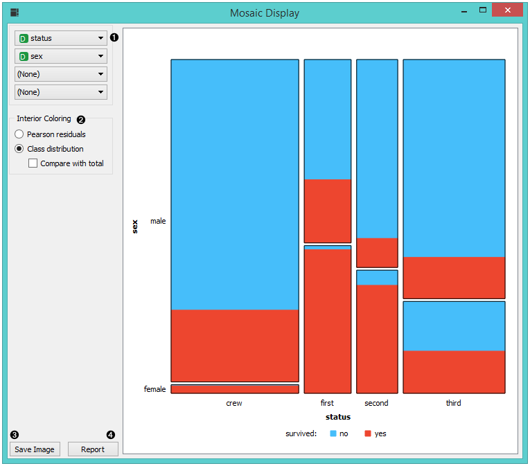
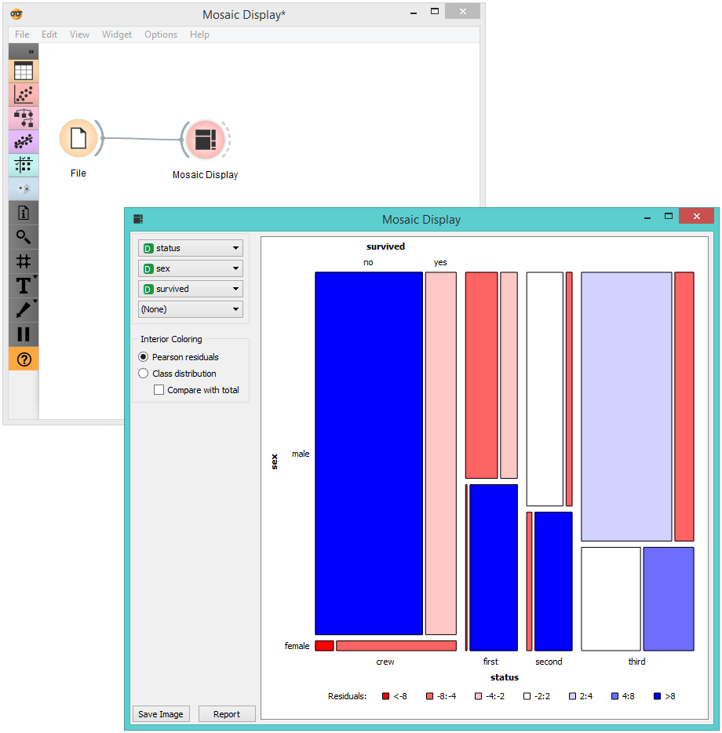

Mosaic Display
Display data in a mosaic plot.
Inputs
- Data: input dataset
- Data subset: subset of instances
Outputs
- Selected data: instances selected from the plot
The Mosaic plot is a graphical representation of a two-way frequency table or a contingency table. It is used for visualizing data from two or more qualitative variables and was introduced in 1981 by Hartigan and Kleiner and expanded and refined by Friendly in 1994. It provides the user with the means to more efficiently recognize relationships between different variables. If you wish to read up on the history of Mosaic Display, additional reading is available here.

- Select the variables you wish to see plotted.
- Select interior coloring. You can color the interior according to class or you can use the Pearson residual, which is the difference between observed and fitted values, divided by an estimate of the standard deviation of the observed value. If Compare to total is clicked, a comparison is made to all instances.
- Save image saves the created image to your computer in a .svg or .png format.
- Produce a report.
Example
We loaded the titanic dataset and connected it to the Mosaic Display widget. We decided to focus on two variables, namely status, sex and survival. We colored the interiors according to Pearson residuals in order to demonstrate the difference between observed and fitted values.

We can see that the survival rates for men and women clearly deviate from the fitted value.